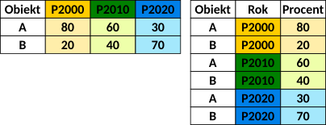

Dane wykorzysywane w analizach muszą być przechowywane w tzw. uporządkowany sposób (ang. tidy data). Uporządkowane dane to dane, w których:
każda zmienna przechowywana jest w osobnej kolumnie.
każda obserwacja jest zapisana w osobnym wierszu w tabeli danych
każda wartość przechowywana jest w osobnej komórce (tzn. każda komórka przechowuje tylko jedną wartość).
Pakiet tidyr() zawiera zestaw funkcji, które ułatwiają tworzenie uporządkowanych danych. Uporządkowane dane mogą być przechowywane w dwóch układach: układzie długim i układzie szerokim (więcej informacji w podrozdziale Sekcja 4.3)
Ze zbioru danych gapminder proszę wybrać wszystkie kolumny z wyjątkiem continent oraz gdpPercap.
4.2.2 Funkcja filter()
Funkcja filter() służy do tworzenia podzbiorów danych poprzez wybór obserwacji spełniających określone warunki. Warunki są określane za pomocą operatorów logicznych (!=, ==, >, <, >=, <=, |, &).
Wybór danych dla roku 2007.
filt1 <-filter(gapminder, year ==2007)head(filt1)
# A tibble: 6 × 6
country continent year lifeExp pop gdpPercap
<fct> <fct> <int> <dbl> <int> <dbl>
1 Afghanistan Asia 2007 43.8 31889923 975.
2 Albania Europe 2007 76.4 3600523 5937.
3 Algeria Africa 2007 72.3 33333216 6223.
4 Angola Africa 2007 42.7 12420476 4797.
5 Argentina Americas 2007 75.3 40301927 12779.
6 Australia Oceania 2007 81.2 20434176 34435.
Wybierz dane dla kontynentu Europa.
W jaki inny sposób można wybrać dane dla roku 2007?
Wybór danych dla roku 2007, w których oczekiwana długość trwania życia przekracza 80 lat.
filt2 <-filter(gapminder, year ==2007& lifeExp >80)filt2
# A tibble: 13 × 6
country continent year lifeExp pop gdpPercap
<fct> <fct> <int> <dbl> <int> <dbl>
1 Australia Oceania 2007 81.2 20434176 34435.
2 Canada Americas 2007 80.7 33390141 36319.
3 France Europe 2007 80.7 61083916 30470.
4 Hong Kong, China Asia 2007 82.2 6980412 39725.
5 Iceland Europe 2007 81.8 301931 36181.
6 Israel Asia 2007 80.7 6426679 25523.
7 Italy Europe 2007 80.5 58147733 28570.
8 Japan Asia 2007 82.6 127467972 31656.
9 New Zealand Oceania 2007 80.2 4115771 25185.
10 Norway Europe 2007 80.2 4627926 49357.
11 Spain Europe 2007 80.9 40448191 28821.
12 Sweden Europe 2007 80.9 9031088 33860.
13 Switzerland Europe 2007 81.7 7554661 37506.
Wybór danych dla roku 2007, dla wszystkich kontynentów z wyjątkiem Azji, w których oczekiwana długość trwania życia przekracza 80 lat.
4.2.3 Funkcja mutate()
Funkcja mutate() służy do tworzenia nowych zmiennych na podstawie określonego wyrażenia
Dodaj kolumnę abbr_country zawierającą trzyliterowy kod państwa.
# A tibble: 6 × 6
country continent year lifeExp pop gdpPercap
<fct> <fct> <int> <dbl> <int> <dbl>
1 Japan Asia 2007 82.6 127467972 31656.
2 Hong Kong, China Asia 2007 82.2 6980412 39725.
3 Japan Asia 2002 82 127065841 28605.
4 Iceland Europe 2007 81.8 301931 36181.
5 Switzerland Europe 2007 81.7 7554661 37506.
6 Hong Kong, China Asia 2002 81.5 6762476 30209.
Posortuj dane malejąco względem zmiennej pop.
Sortowanie rosnące względem kontynentu (continent) oraz oczekiwanej długości trwania życia (lifeExp)
[1] Asia Asia Asia Asia Asia Asia
Levels: Africa Americas Asia Europe Oceania
Wybierz ze zbioru danych kolumnę pop.
4.2.9 Operator łączący (%>%).
Używając pakietu dplyr można łączyć ze sobą funkcje używając operatora %>%
Przykład
Które kraje w roku 1952 miały liczbę ludności powyżej 100 milionów?
Aby odpowiedzieć na to pytanie możemy wykonać każdą operację osobno, i jej wynik zapisać w osobnym obiekcie. Operator łączący %>% pozwala natomiast na przekazanie wyniku działania jednej funkcji do drugiej, bez tworzenia osobnych obiektów.
f1 <-filter(gapminder, pop >100000000& year ==1952)s1 <-select(f1, country, pop)a1 <-arrange(s1, pop) # sortowanie danych wzgledem popa1
# A tibble: 3 × 2
country pop
<fct> <int>
1 United States 157553000
2 India 372000000
3 China 556263527
Wykorzystanie operatora łączącego %>%
df <- gapminder %>%#wejsciowy zbior danychfilter(pop >100000000& year ==1952) %>%# wybor krajow z pop > 100mln w roku 1952select(country, pop) %>%# wybor kolumn country, pop arrange(pop) # sortowanie danych wzgledem popdf
# A tibble: 3 × 2
country pop
<fct> <int>
1 United States 157553000
2 India 372000000
3 China 556263527
Które kraje w 2007 roku miały populację powyżej 100 milionów? Posortuj wynik od krajów z największą liczbą ludności do krajów z najmniejszą liczbą ludności.
4.2.10 Funkcja join()
x <-data.frame(country =c("Poland", "USA", "Germany"), pop =c(36.82, 333.3, 83.8))y =data.frame(country =c("Poland", "USA", "Italy"), pop =c(36.82, 333.3, 58.94))
x
country pop
1 Poland 36.82
2 USA 333.30
3 Germany 83.80
y
country pop
1 Poland 36.82
2 USA 333.30
3 Italy 58.94
Funkcja inner_join(x, y) zwraca tylko obiekty występujące w obu tabelach
inner_df <-inner_join(x, y, by ='country')inner_df
country pop.x pop.y
1 Poland 36.82 36.82
2 USA 333.30 333.30
Funkcja left_join(x, y) zachowuje wszystkie obserwacje w x, niezależnie od tego, czy mają swój odpowiednik w tabeli y. Jest to najczęściej używane łączenie, ponieważ gwarantuje, że nie utracimy obserwacji z tabeli podstawowej (x).
left_df <-left_join(x, y, by ='country')left_df
country pop.x pop.y
1 Poland 36.82 36.82
2 USA 333.30 333.30
3 Germany 83.80 NA
Funkcja right_join(x, y) zachowuje wszystkie obserwacje w y.
right_df <-right_join(x, y, by ='country')right_df
country pop.x pop.y
1 Poland 36.82 36.82
2 USA 333.30 333.30
3 Italy NA 58.94
Funkcja full_join(x, y) zwraca wszystkie obiekty z tabeli x oraz z tabeli y.
full_df <-full_join(x, y, by ='country')full_df
country pop.x pop.y
1 Poland 36.82 36.82
2 USA 333.30 333.30
3 Germany 83.80 NA
4 Italy NA 58.94
4.3 Układ danych
Dane w tabeli mogą być zapisywane w układzie długim lub szerokim.

Układ danych (po lewej) - szeroki; (po prawej) długi
Zmiana układu danych jest możliwa z użyciem funkcji z pakietu tidyr.
library(tidyr)
Układ długi
Dane gapminder są zapisane w układzie długim:
head(gapminder, 10)
# A tibble: 10 × 6
country continent year lifeExp pop gdpPercap
<fct> <fct> <int> <dbl> <int> <dbl>
1 Afghanistan Asia 1952 28.8 8425333 779.
2 Afghanistan Asia 1957 30.3 9240934 821.
3 Afghanistan Asia 1962 32.0 10267083 853.
4 Afghanistan Asia 1967 34.0 11537966 836.
5 Afghanistan Asia 1972 36.1 13079460 740.
6 Afghanistan Asia 1977 38.4 14880372 786.
7 Afghanistan Asia 1982 39.9 12881816 978.
8 Afghanistan Asia 1987 40.8 13867957 852.
9 Afghanistan Asia 1992 41.7 16317921 649.
10 Afghanistan Asia 1997 41.8 22227415 635.
Układ szeroki
Funkcja pivot_wider() przekształca dane z formatu długiego w szeroki. Obiekt gapminder_wide w każdej kolumnie przechowuje dane dla jednego roku, a w każdym wierszu dla kraju.